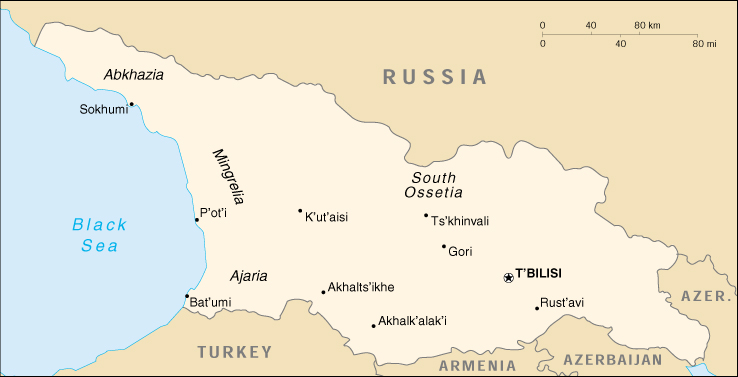

{kind=link}


| Georgia |
|
|  | |
| Introduction |
Background: Georgia was absorbed into the Russian Empire in the 19th century. Independent for three years (1918-1921) following the Russian revolution, it was forcibly incorporated into the USSR until the Soviet Union dissolved in 1991. Russian troops remain garrisoned at four military bases and as peacekeepers in the separatist regions of Abkhazia and South Ossetia. The country continues to move toward a market economy and greater integration with Western institutions.
| Geography |
Location: Southwestern Asia, bordering the Black Sea, between Turkey and Russia
Geographic coordinates: 42 00 N, 43 30 E
Map references: Commonwealth of Independent States
Area:
total:
69,700 sq km
land:
69,700 sq km
water:
0 sq km
Area - comparative: slightly smaller than South Carolina
Land boundaries:
total:
1,461 km
border countries:
Armenia 164 km, Azerbaijan 322 km, Russia 723 km, Turkey 252 km
Coastline: 310 km
Maritime claims: NA
Climate: warm and pleasant; Mediterranean-like on Black Sea coast
Terrain: largely mountainous with Great Caucasus Mountains in the north and Lesser Caucasus Mountains in the south; Kolkhet'is Dablobi (Kolkhida Lowland) opens to the Black Sea in the west; Mtkvari River Basin in the east; good soils in river valley flood plains, foothills of Kolkhida Lowland
Elevation extremes:
lowest point:
Black Sea 0 m
highest point:
Mt'a Mqinvartsveri (Gora Kazbek) 5,048 m
Natural resources: forests, hydropower, manganese deposits, iron ore, copper, minor coal and oil deposits; coastal climate and soils allow for important tea and citrus growth
Land use:
arable land:
9%
permanent crops:
4%
permanent pastures:
25%
forests and woodland:
34%
other:
28% (1993 est.)
Irrigated land: 4,000 sq km (1993 est.)
Natural hazards: earthquakes
Environment - current issues: air pollution, particularly in Rust'avi; heavy pollution of Mtkvari River and the Black Sea; inadequate supplies of potable water; soil pollution from toxic chemicals
Environment - international agreements:
party to:
Air Pollution, Biodiversity, Climate Change, Climate Change-Kyoto Protocol, Desertification, Endangered Species, Hazardous Wastes, Law of the Sea, Ozone Layer Protection, Ship Pollution, Wetlands
signed, but not ratified:
none of the selected agreements
| People |
Population: 5,019,538 (July 2000 est.)
Age structure:
0-14 years:
20% (male 517,829; female 497,155)
15-64 years:
67% (male 1,630,814; female 1,755,323)
65 years and over:
13% (male 238,090; female 380,327) (2000 est.)
Population growth rate: -0.62% (2000 est.)
Birth rate: 10.87 births/1,000 population (2000 est.)
Death rate: 14.52 deaths/1,000 population (2000 est.)
Net migration rate: -2.57 migrant(s)/1,000 population (2000 est.)
Sex ratio:
at birth:
1.05 male(s)/female
under 15 years:
1.04 male(s)/female
15-64 years:
0.93 male(s)/female
65 years and over:
0.63 male(s)/female
total population:
0.91 male(s)/female (2000 est.)
Infant mortality rate: 52.94 deaths/1,000 live births (2000 est.)
Life expectancy at birth:
total population:
64.48 years
male:
60.9 years
female:
68.23 years (2000 est.)
Total fertility rate: 1.41 children born/woman (2000 est.)
Nationality:
noun:
Georgian(s)
adjective:
Georgian
Ethnic groups: Georgian 70.1%, Armenian 8.1%, Russian 6.3%, Azeri 5.7%, Ossetian 3%, Abkhaz 1.8%, other 5%
Religions: Georgian Orthodox 65%, Muslim 11%, Russian Orthodox 10%, Armenian Apostolic 8%, unknown 6%
Languages:
Georgian 71% (official), Russian 9%, Armenian 7%, Azeri 6%, other 7%
note:
Abkhaz (official in Abkhazia)
Literacy:
definition:
age 15 and over can read and write
total population:
99%
male:
100%
female:
98% (1989 est.)
| Government |
Country name:
conventional long form:
none
conventional short form:
Georgia
local long form:
none
local short form:
Sak'art'velo
former:
Georgian Soviet Socialist Republic
Data code: GG
Government type: republic
Capital: T'bilisi
Administrative divisions:
53 rayons (raionebi, singular - raioni), 9 cities* (k'alak'ebi, singular - k'alak'i), and 2 autonomous republics** (avtomnoy respubliki, singular - avtom respublika); Abashis, Abkhazia or Ap'khazet'is Avtonomiuri Respublika** (Sokhumi), Adigenis, Ajaria or Acharis Avtonomiuri Respublika** (Bat'umi), Akhalgoris, Akhalk'alak'is, Akhalts'ikhis, Akhmetis, Ambrolauris, Aspindzis, Baghdat'is, Bolnisis, Borjomis, Chiat'ura*, Ch'khorotsqus, Ch'okhatauris, Dedop'listsqaros, Dmanisis, Dushet'is, Gardabanis, Gori*, Goris, Gurjaanis, Javis, K'arelis, Kaspis, Kharagaulis, Khashuris, Khobis, Khonis, K'ut'aisi*, Lagodekhis, Lanch'khut'is, Lentekhis, Marneulis, Martvilis, Mestiis, Mts'khet'is, Ninotsmindis, Onis, Ozurget'is, P'ot'i*, Qazbegis, Qvarlis, Rust'avi*, Sach'kheris, Sagarejos, Samtrediis, Senakis, Sighnaghis, T'bilisi*, T'elavis, T'erjolis, T'et'ritsqaros, T'ianet'is, Tqibuli*, Ts'ageris, Tsalenjikhis, Tsalkis, Tsqaltubo*, Vanis, Zestap'onis, Zugdidi*, Zugdidis
note:
administrative divisions have the same names as their administrative centers (exceptions have the administrative center name following in parentheses)
Independence: 9 April 1991 (from Soviet Union)
National holiday: Independence Day, 26 May (1991)
Constitution: adopted 17 October 1995
Legal system: based on civil law system
Suffrage: 18 years of age; universal
Executive branch:
chief of state:
President Eduard Amvrosiyevich SHEVARDNADZE (previously elected chairman of the Government Council 10 March 1992, Council has since been disbanded; previously elected chairman of Parliament 11 October 1992; president since 26 November 1995); note - the president is both the chief of state and head of government
head of government:
President Eduard Amvrosiyevich SHEVARDNADZE (previously elected chairman of the Government Council 10 March 1992, Council has since been disbanded; previously elected chairman of Parliament 11 October 1992; president since 26 November 1995); note - the president is both the chief of state and head of government
cabinet:
Cabinet of Ministers
elections:
president elected by popular vote for a five-year term; election last held 5 November 1995 (next to be held 9 April 2000)
election results:
Eduard SHEVARDNADZE elected president; percent of vote - Eduard SHEVARDNADZE 74%
Legislative branch:
unicameral Supreme Council (commonly referred to as Parliament) or Umaghiesi Sabcho (235 seats; members are elected by popular vote to serve four-year terms)
elections:
last held 31 October 1999 (next to be held NA 2003)
election results:
percent of vote by party - CUG 41.85%, AGUR 25.65%, IWSG 7.8%, all other parties received less than 7% each; seats by party - CUG 130, AGUR 59, IWSG 15, Abkhaz deputies 12, independents 14, other 5
Judicial branch: Supreme Court, judges elected by the Supreme Council on the president's recommendation; Constitutional Court
Political parties and leaders: Citizen's Union of Georgia or CUG [Eduard SHEVARDNADZE]; Georgian United Communist Party or UCPG [Panteleimon GIORGADZE, chairman]; Greens Party [Giorgi GACHECHILADZE]; Industry Will Save Georgia or IWSG [Georgi Topadze]; Labor Party [Shalva NATELASHVILI]; National Democratic Party or NDP [Irina SARISHVILI-CHANTURIA]; National Independent Party or NIP [Irakli TSERETELI, chairman]; People's Party [Mamuka GIORGADZE]; Socialist Party or SPG [Vakhtang RCHEULISHVILI]; Union for "Revival" Party or AGUR [Alsan ABASHIDZE]; Union of Traditionalists or UGT [Akaki ASATIANI]; United Republican Party or URP [Nodar NATADZE, chairman]
Political pressure groups and leaders: Georgian refugees from Abkhazia (Abkhaz faction in Georgian Parliament); separatist elements in the breakaway region of Abkhazia; supporters of the late ousted President Zviad GAMSAKHURDYA remain a source of opposition
International organization participation: BSEC, CCC, CE, CE (guest), CIS, EAPC, EBRD, ECE, FAO, IAEA, IBRD, ICAO, IDA, IFAD, IFC, IFRCS, ILO, IMF, IMO, Inmarsat, Interpol, IOC, IOM (observer), ISO (correspondent), ITU, OPCW, OSCE, PFP, UN, UNCTAD, UNESCO, UNIDO, UPU, WHO, WIPO, WMO, WToO, WTrO (applicant)
Diplomatic representation in the US:
chief of mission:
Ambassador Tedo JAPARIDZE
chancery:
Suite 300, 1615 New Hampshire Avenue NW, Washington, DC 20009
telephone:
[1] (202) 387-2390
FAX:
[1] (202) 393-4537
Diplomatic representation from the US:
chief of mission:
Ambassador Kenneth S. YALOWITZ
embassy:
#25 Antoneli Street, T'bilisi 380026
mailing address:
use embassy street address
telephone:
[995] (32) 989-967
FAX:
[995] (32) 933-759
Flag description: maroon field with small rectangle in upper hoist side corner; rectangle divided horizontally with black on top, white below
| Economy |
Economy - overview: Georgia's economy has traditionally revolved around Black Sea tourism; cultivation of citrus fruits, tea, and grapes; mining of manganese and copper; and output of a small industrial sector producing wine, metals, machinery, chemicals, and textiles. The country imports the bulk of its energy needs, including natural gas and oil products. Its only sizable internal energy resource is hydropower. Despite the severe damage the economy has suffered due to civil strife, Georgia, with the help of the IMF and World Bank, made substantial economic gains since 1995, increasing GDP growth and slashing inflation. The Georgian economy continues to experience large budget deficits due to a failure to collect tax revenues. Georgia also still suffers from energy shortages; it privatized the distribution network in 1998, and deliveries are steadily improving. Georgia is pinning its hopes for long-term recovery on the development of an international transportation corridor through the key Black Sea ports of P'ot'i and Bat'umi. The growing trade deficit, continuing problems with tax evasion and corruption, and political uncertainties cloud the short-term economic picture. However, revived investment could spur higher economic growth in 2000, perhaps up to 6%.
GDP: purchasing power parity - $11.7 billion (1999 est.)
GDP - real growth rate: 3.5% (1999 est.)
GDP - per capita: purchasing power parity - $2,300 (1999 est.)
GDP - composition by sector:
agriculture:
32%
industry:
23%
services:
45% (1999 est.)
Population below poverty line: 60% (1999 est.)
Household income or consumption by percentage share:
lowest 10%:
NA%
highest 10%:
NA%
Inflation rate (consumer prices): 19% (1999 est.)
Labor force: 3.08 million (1997)
Labor force - by occupation: industry and construction 20%, agriculture and forestry 40%, services 40% (1999 est.)
Unemployment rate: 14.5% (1998 est.)
Budget:
revenues:
$364 million
expenditures:
$568 million, including capital expenditures of $NA (1998)
Industries: steel, aircraft, machine tools, electric locomotives, trucks, tractors, textiles, shoes, chemicals, wood products, wine
Industrial production growth rate: -0.3% (1998 est.)
Electricity - production: 6.96 billion kWh (1998)
Electricity - production by source:
fossil fuel:
14.66%
hydro:
85.34%
nuclear:
0%
other:
0% (1998)
Electricity - consumption: 6.123 billion kWh (1998)
Electricity - exports: 700 million kWh (1998)
Electricity - imports: 350 million kWh (1998)
Agriculture - products: citrus, grapes, tea, vegetables, potatoes; livestock
Exports: $330 million (1999 est.)
Exports - commodities: citrus fruits, tea, wine, other agricultural products; diverse types of machinery and metals; chemicals; fuel reexports; textiles
Exports - partners: Russia 27%, Turkey 20%, Azerbaijan 10%, Armenia 8% (1997)
Imports: $840 million (1999 est.)
Imports - commodities: fuel, grain and other foods, machinery and parts, transport equipment
Imports - partners: EU 22%, Russia 15%, Turkey 12%, Azerbaijan 12%, US 7% (1997)
Debt - external: $1.8 billion (1998)
Economic aid - recipient: $212.7 million (1995)
Currency: 1 lari (GEL) = 100 tetri
Exchange rates: lari per US$1 (end of period) - 1.9503 (December 1999), 2.0245 (1999), 1.3898 (1998), 1.2975 (1997), 1.2628 (1996), 1.24 (December 1995)
Fiscal year: calendar year
| Communications |
Telephones - main lines in use: 554,000 (1995)
Telephones - mobile cellular: 150 (1995)
Telephone system:
domestic:
local - T'bilisi and K'ut'aisi have cellular telephone networks with about 10,000 customers total; urban areas 20 telephones/100 people; rural areas 4 telephones/100 people; intercity - a fiber-optic line connects T'bilisi to K'ut'aisi (Georgia's second largest city); nationwide pager service
international:
Georgia and Russia are working on a fiber-optic line between P'ot'i and Sochi (Russia); present international service is available by microwave, landline, and satellite through the Moscow switch; international electronic mail and telex service available
Radio broadcast stations: AM 7, FM 12, shortwave 4 (1998)
Radios: 3.02 million (1997)
Television broadcast stations: 12 (plus repeaters) (1998)
Televisions: 2.57 million (1997)
Internet Service Providers (ISPs): 5 (1999)
| Transportation |
Railways:
total:
1,583 km in common carrier service; does not include industrial lines
broad gauge:
1,583 km 1.520-m gauge (1993)
Highways:
total:
20,700 km
paved:
19,354 km
unpaved:
1,346 km (1996 est.)
Pipelines: crude oil 370 km; refined products 300 km; natural gas 440 km (1992)
Ports and harbors: Bat'umi, P'ot'i, Sokhumi
Merchant marine:
total:
17 ships (1,000 GRT or over) totaling 103,080 GRT/158,803 DWT
ships by type:
cargo 10, chemical tanker 1, petroleum tanker 6 (1999 est.)
Airports: 28 (1994 est.)
Airports - with paved runways:
total:
14
over 3,047 m:
1
2,438 to 3,047 m:
7
1,524 to 2,437 m:
4
914 to 1,523 m:
1
under 914 m:
1 (1994 est.)
Airports - with unpaved runways:
total:
14
over 3,047 m:
1
2,438 to 3,047 m:
1
1,524 to 2,437 m:
1
914 to 1,523 m:
5
under 914 m:
6 (1994 est.)
Transportation - note: transportation network is in poor condition and disrupted by ethnic conflict, criminal activities, and fuel shortages; network lacks maintenance and repair
| Military |
Military branches: Ground Forces, Navy, Air Force, Air Defense Forces, Naval Forces, National Guard, Republic Security Forces (internal and border troops)
Military manpower - military age: 18 years of age
Military manpower - availability:
males age 15-49:
1,291,190 (2000 est.)
Military manpower - fit for military service:
males age 15-49:
1,021,072 (2000 est.)
Military manpower - reaching military age annually:
males:
40,694 (2000 est.)
Military expenditures - dollar figure: $27 million (FY99)
Military expenditures - percent of GDP: 1% (FY99)
Military - note: a CIS peacekeeping force consisting of Russian troops is deployed in the Abkhazia region of Georgia together with a UN military observer group; a Russian peacekeeping battalion is deployed in South Ossetia
| Transnational Issues |
Disputes - international: none
Illicit drugs: limited cultivation of cannabis and opium poppy, mostly for domestic consumption; used as transshipment point for opiates via Central Asia to Western Europe and Russia